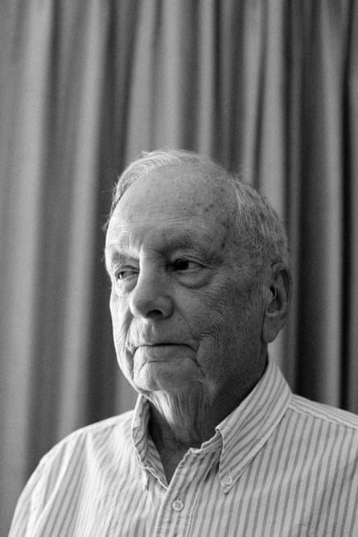

I sit in my room in this nursing home near Sydney, a box of four walls that holds all I now call my own. Two suitcases could carry it: a few clothes, some worn books, a scattering of trinkets. The thought strikes me as both stark and oddly freeing. Not long ago my world was vast, a house with rooms I rarely entered, a garden that sprawled beyond need, two cars idling in the driveway, one barely driven. Now it’s gone. The house, the cars, the cartons overflowing in the garage, all sold, given away or abandoned. A heart attack and dwindling funds brought me here two and a half years ago. Family ties, thin as they are, keep me from moving anywhere away from here.
I don’t resent it. I’ve seen the world, jungles, deserts, cities that glittered under foreign skies. That hunger is sated. This is a different journey, one of stillness, of finding meaning in what remains.
The nursing home is no idyll, no glossy promise of golden years. It’s a place of routine, of quiet necessity. Mornings begin with carers, gentle, hurried women who tidy my bed, adjust pillows, offer a smile before moving on. Tea and toast settle as I sit by the window. The air carries the clean sting of antiseptic, mingling with the chatter of birds outside. There’s peace in these moments, before the home stirs fully awake.
The staff do their work well, though they’re stretched thin. They check on us, ask after our aches, offer kind words that linger like a faint warmth. Activities fill the day, card games, a singalong. I join when I feel like it, which is less often than I might. The choice is mine, and that’s enough. The front doors creak as relatives arrive, their faces a mix of cheer and strain. Some hide tears, we all pretend not to see. We don’t speak of sadness here. It’s a silent agreement, a way to keep the days bearable.
- Sign up for a weekly email featuring our best reads
The residents are a varied lot. Some are old, their bodies bent by years. Others are younger, broken by minds that betray them. A woman down the hall clutches a photograph, her son a rare visitor, his life too crowded for her. She speaks of him with no anger, only a flat resignation. A man, his eyes dim with addiction’s toll, mutters of a sister who never calls. I listen, nod, share a story of my own.
We understand each other here, bound by the shared weight of being left behind.
This place is a mirror, reflecting a truth we’d rather not face. Families, once close, find it easier to place their own in these clean, quiet rooms. It’s not cruelty, not always. Caring for the old, the broken, the lost-it, demands time, patience, a surrender most cannot afford. So they sign papers, appoint guardians and let the system take over. The nursing home becomes a vault, sealing away what disrupts the orderly march of life. Out of sight, out of mind. Yet I wonder if, in the quiet of their nights, those families feel the shadow of what they’ve set aside.
‘I’ve seen the world, jungles, deserts, cities that glittered under foreign skies. That hunger is sated. This is a different journey, one of stillness, of finding meaning in what remains.’Photograph: Bec Lorrimer/The Guardian
I walk the corridors, dim and smelling of antiseptic and something less tangible – forgotten promises perhaps. Residents sit, staring at walls or televisions that drone with voices no one heeds. Many wrestle with dementia, their thoughts scattering like ash. Others bear scars of choices or chance, their lives eroded to this point. A few, changed by illness or time, became strangers to those who loved them. To care for such people is hard, unglamorous work. Easier to let them fade into these walls.
Yet there’s life here too. I find it in small things: a book that holds my attention, sunlight warming my room, a laugh shared over a memory. The community binds us. We talk of old days, of children grown distant, of the world beyond these walls. There’s comfort in that, a kind of strength. The local shops are my horizon now, but I don’t mind. I’ve seen enough of the world to know its pleasures are fleeting.
Here I have my memories, these people, this quiet. The day stretches before me, simple and unhurried, the sun climbing higher, the air still fresh. There’s no need to rush, no call to chase what’s gone. This is my life now, pared to its bones, and it’s enough. The light shifts on the wall, and I breathe it in. It’s a good day. Better than most.